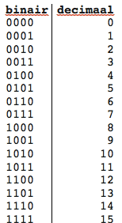

Het binaire stelsel is een zelfde soort stelsel als het tientallen stelsel die de mens gebruikt,alleen gebruikt het tientallen stelsel tien getallen en het binaire stelsel gebruikt twee getallen. Op het plaatje kun je zien de getallen van één tot vijftien in binair, in het rijtje ernaast kun je zien welk binair getal wat betekent
